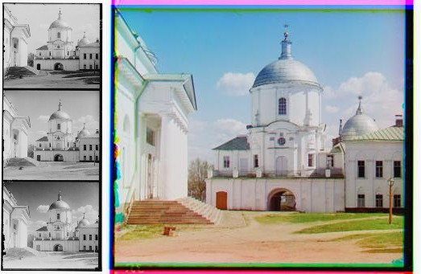
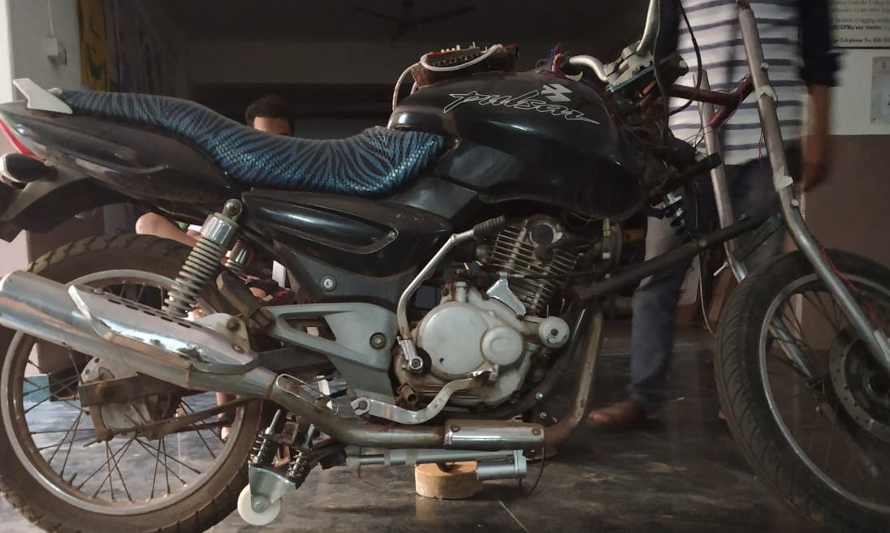

Chetan's Academic Projects
Robot Operating System (ROS)-Laser based preception and navigation with obstacle avoidance.
 Navigation and Obstacle avoidance-Youtube-Link
Navigation and Obstacle avoidance-Youtube-Link
LIDAR Perception-Youtube-Link
This project is performed on ROS middleware. The path finding algorith used here is the BUG2 algorithm. It makes the robot change its behavior between WALL-FOLLOW and GOAL-SEEK. A 180-degree LIDAR sensor is attached at front of the robot. For preception, RANSAC algorithm (Random sample consensus) is used to generate 2-D Lines of the obstacles that are detected. RVIZ platform is used for visualization.
Computer Vision
The task in this project was colorizing the Prokudin-Gorskii photo collection. Images were aligned using various methods like SSD (Sum of squared differences) and NCC (Normalised Cross Corelation). Feature based alignment i.e. Harris Corner Detection method was also used to align the images. RASNAC was implemeted along with Harris Corner detection for optimization.
Automatic Balancing Mechanism for Two Wheelers (Patent Filed)
Working Model-Youtube-Link
With increasing traffic and improving living standards, comfort and safety are to be
ensured during the commute. Cars seem to be the obvious choice for satisfying these
needs yet are not affordable to more than half of the population in India. Determining
a solution to this problem, concept of automatic stand mechanism for two wheelers
has been proposed.
This model essentially being a portable attachment will provide the compatibility to
all the available two wheelers in the market. This product may further be developed to
help disabled as well as assist common people to balance heavy two wheelers. Simple
yet effective, it will help us reach the masses.